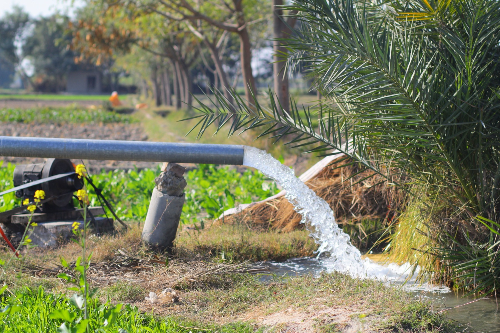
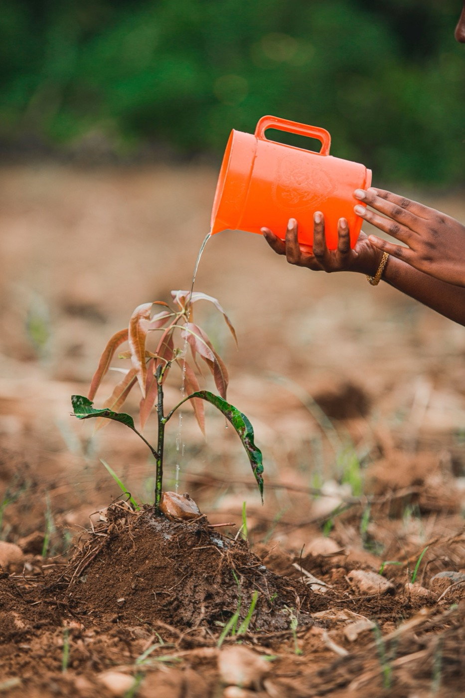
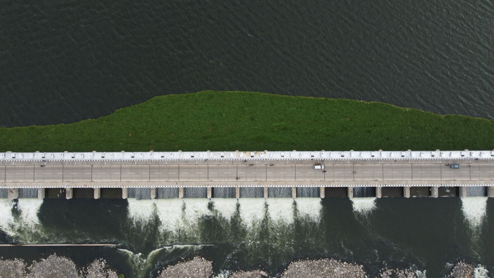
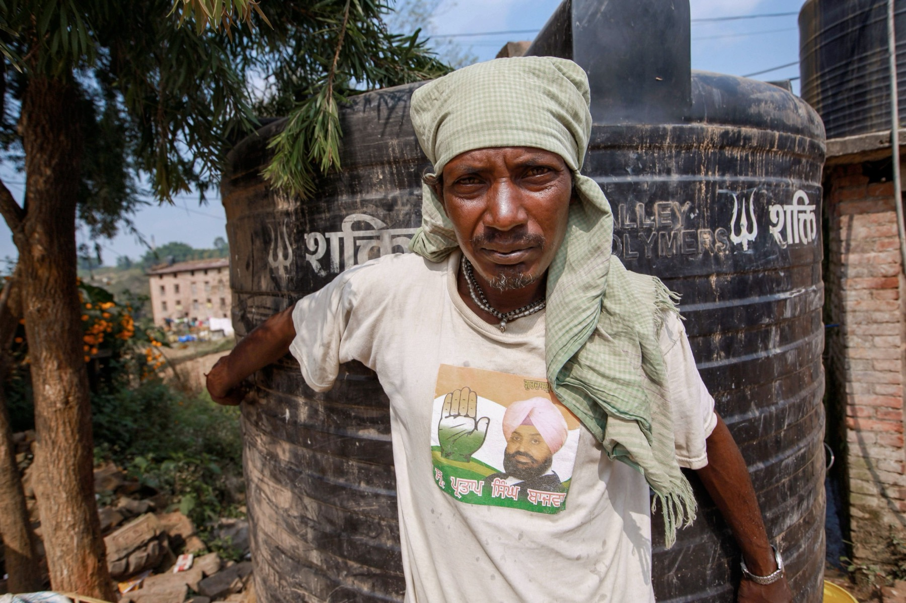

We deliver the complete project lifecycle in-house from technical assessments and planning to execution and handover — ensuring quality, accountability, and measurable impact.

End-to-end solutions focused on water security, conservation, and ecosystem restoration — engineered for India's diverse hydrology.
Creating resilient green landscapes that enhance biodiversity, restore degraded land, and re-introduce native species to the everyday city.


Seamless delivery from concept to completion through technical expertise, modern geospatial tools, and rigorous on-ground monitoring.
Bridging CSR vision with on-ground impact through structured, accountable execution — for corporates, foundations and government bodies.
